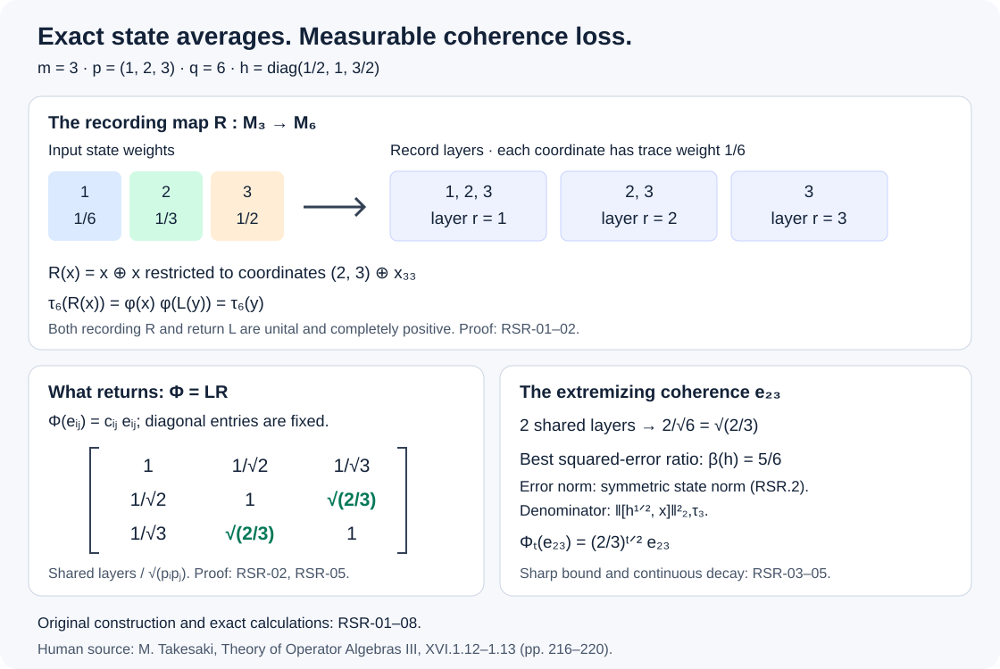

Rational state records and exact coherence loss
A finite record can preserve a state's averages exactly and still lose off-diagonal information. Here the loss can be computed entry by entry. We construct the two completely positive maps, determine their exact return map, and find the best commutator coefficient for each density. The same coefficients form a continuous semigroup for every faithful matrix density, with an explicit rate of convergence to its centralizer.
We also prove that any unital completely positive reconstruction can be perturbed to have a rational faithful input state. The proof works for an arbitrary state on a unital C*-algebra and gives a bound at every matrix amplification.
The state and the record space
Throughout the first five sections,
\[ \tau_m=\operatorname{Tr}_m/m,\qquad h>0,\quad \tau_m(h)=1,\qquad \varphi(x)=\tau_m(hx). \tag{RSR.1} \]The matrix size \(m\) is a positive integer. The error norm is
\[ \|x\|_\varphi^\# =\left(\frac{\varphi(x^*x)+\varphi(xx^*)}{2}\right)^{1/2}. \tag{RSR.2} \]This symmetric state norm is distinct from the fourth-root Hilbert norm in The finite-tracial-algebra theorem in full generality.
The finite diagonalization, matrix trace duality and completely positive sandwich rules are proved in Densities, pairings and completely positive maps and its explicit earlier inputs. Assume first that \(h\) is diagonal and has rational eigenvalues. Choose positive integers \(p_i,q\) so that
\[ h_i=\frac{mp_i}{q},\qquad q=\sum_{i=1}^m p_i. \tag{RSR.3} \]Such integers exist because the positive rational probabilities \(h_i/m\) sum to one: take a common denominator.
Use the record space
\[ K=\operatorname{span}\{\xi_{r,i}:1\le i\le m,\ 1\le r\le p_i\}, \qquad \dim K=q, \]with the displayed vectors orthonormal. For each layer \(r\le p_{\max}=\max_i p_i\), let \(J_r:\mathbb C^m\to K\) be
\[ J_re_i= \begin{cases}\xi_{r,i},&r\le p_i,\\0,&r>p_i.\end{cases} \]Put \(D=\operatorname{diag}(p_i^{-1/2})\). Define recording and return maps by
\[ \mathcal R(x)=\sum_{r=1}^{p_{\max}}J_rxJ_r^*, \qquad \mathcal L(y)=\sum_{r=1}^{p_{\max}}D J_r^*yJ_rD. \tag{RSR.4} \]Their domains and codomains are \(M_m\xrightarrow{\mathcal R}B(K)\cong M_q\) and \(M_q\xrightarrow{\mathcal L}M_m\). Both are completely positive, since their amplifications are finite sums of positive sandwiches. The relations
\[ \sum_rJ_rJ_r^*=1_K,\qquad \sum_rD J_r^*J_rD=1_m \]show that both maps are unital. The first identity counts each record coordinate once; the second counts each input coordinate \(p_i\) times with weight \(1/p_i\). These arguments include \(m=1\).
Exact state preservation and the return coefficients
The diagonal entry \(x_{ii}\) appears \(p_i\) times in \(\mathcal R(x)\). The diagonal entry of the return map is
\[ \mathcal L(y)_{ii}=\frac1{p_i}\sum_{r=1}^{p_i}y_{(r,i),(r,i)}. \]Therefore
\[ \tau_q\mathcal R=\varphi,\qquad \varphi\mathcal L=\tau_q. \tag{RSR.5} \]Every record diagonal receives weight \(1/q\) in the second identity. These are identities of linear functionals on the whole matrix algebras, not only on positive inputs.
For general entries,
\[ \mathcal L(y)_{ij} =\frac1{\sqrt{p_ip_j}} \sum_{r\le\min(p_i,p_j)}y_{(r,i),(r,j)}. \tag{RSR.6} \]Recording a matrix unit repeats it once in each layer shared by its two coordinates. Thus the return map \(\Phi=\mathcal L\mathcal R\) is the Schur multiplier
\[ \Phi(e_{ij})=c_{ij}e_{ij},\qquad c_{ij}=\frac{\min(p_i,p_j)}{\sqrt{p_ip_j}} =\sqrt{\frac{\min(h_i,h_j)}{\max(h_i,h_j)}}. \tag{RSR.7} \]A Schur multiplier here simply means entrywise multiplication by the displayed scalar coefficients. Complete positivity has already been proved through (RSR.4).
The maps also satisfy the symmetric weighted-adjoint pairing
\[ \tau_m(h^{1/2}\mathcal L(y)h^{1/2}x) =\tau_q(y\mathcal R(x)). \tag{RSR.8} \]To check it, the coefficient of \(x_{ij}\) on the left is \(m^{-1}\sqrt{h_ih_j}\mathcal L(y)_{ji}\). Using (RSR.3) and (RSR.6), this is \(q^{-1}\sum_{r\le\min(p_i,p_j)}y_{(r,j),(r,i)}\), exactly the coefficient on the right. Thus \(\mathcal L\) agrees with the unique symmetric adjoint proved in WAD-07. Its explicit positivity proof did not require that theorem.
If \(h=u d u^*\) is not diagonal, use \(\mathcal R_d\operatorname{Ad}(u^*)\) and \(\operatorname{Ad}(u)\mathcal L_d\). Unitary invariance of trace proves (RSR.5) and (RSR.8) for this pair. The description of its return map in spectral blocks below shows that it is independent of the chosen eigenbasis.
The best commutator coefficient for each density
Write \(\|z\|_{2,\tau_m}^2=\tau_m(z^*z)\). Direct entry calculations give
\[ \begin{aligned} \|\Phi(x)-x\|_\varphi^{\#\,2} &=\frac1{2m}\sum_{i,j}(h_i+h_j)(1-c_{ij})^2|x_{ij}|^2,\\ \|[h^{1/2},x]\|_{2,\tau_m}^2 &=\frac1m\sum_{i,j}(\sqrt{h_i}-\sqrt{h_j})^2|x_{ij}|^2. \end{aligned} \tag{RSR.9} \]For example, \(\varphi(x^*x)=m^{-1}\sum_{i,j}h_j|x_{ij}|^2\); the other term supplies \(h_i\). No self-adjointness of \(x\) is used.
When \(h_i\ne h_j\), cancellation of the nonzero square gives the exact ratio of the corresponding coefficients:
\[ \frac{(h_i+h_j)(1-c_{ij})^2} {2(\sqrt{h_i}-\sqrt{h_j})^2} =\frac{h_i+h_j}{2\max(h_i,h_j)}. \tag{RSR.10} \]For equal eigenvalues both coefficients are zero. Define
\[ \beta(h)= \begin{cases} \displaystyle\max_{h_i\ne h_j} \frac{h_i+h_j}{2\max(h_i,h_j)},&h\text{ is not scalar},\\ 0,&h\text{ is scalar}. \end{cases} \tag{RSR.11} \]Theorem. The smallest nonnegative constant \(C\) such that
\[ \|\Phi(x)-x\|_\varphi^\# \le C\,\|[h^{1/2},x]\|_{2,\tau_m} \quad\text{for every }x\in M_m \tag{RSR.12} \]is \(C=\sqrt{\beta(h)}\).
Proof. Bound each nonzero coefficient ratio in (RSR.9) by its maximum. Summing the nonnegative terms proves (RSR.12). A matrix unit \(e_{ij}\) for a maximizing pair gives equality and a nonzero denominator, so no smaller constant works. When \(h\) is scalar, (RSR.7) gives \(\Phi=\operatorname{id}\) and both sides vanish; the smallest nonnegative constant is zero. Unitary conjugation preserves both norms and the commutator, so the conclusion holds for every rational-spectrum \(h\). \(\square\)
For each fixed nonscalar faithful density, \(1/2<\beta(h)<1\). Nevertheless the universal coefficient one is sharp for these record maps. In dimension two take multiplicities \(p_1=N,p_2=N+1\). Then
\[ \beta(h)=\frac{2N+1}{2N+2}\longrightarrow1. \]The corresponding matrix unit gives the lower bound on every universal coefficient. Thus the source estimate with coefficient one cannot be uniformly improved, even among these two-dimensional rational states.
Repeated records and a continuous modular filter
There is a canonical return channel for every faithful density, including irrational spectra. Let \(h=\sum_{\lambda}\lambda P_\lambda\) be its decomposition into distinct positive eigenvalues. For \(t\ge0\), define
\[ \Phi_t(x)= \sum_{\lambda,\mu} \exp\!\left(-\frac t2|\log\lambda-\log\mu|\right) P_\lambda xP_\mu. \tag{RSR.13} \]For rational spectra, \(\Phi_1\) is exactly the return map (RSR.7), and \(\Phi_N=\Phi_1^N\) for nonnegative integers \(N\). Formula (RSR.13) makes sense for irrational spectra without asserting an exact finite record of rational dimension for that state.
We prove complete positivity directly with finite vectors. Order the eigenvalues with repetitions as \(h_1\le\cdots\le h_m\), set \(a_i=h_i^t\), and put \(a_0=0\). Define \(v_i\in\mathbb C^m\) by
\[ (v_i)_r= \begin{cases} \sqrt{a_r-a_{r-1}}/\sqrt{a_i},&r\le i,\\ 0,&r>i. \end{cases} \]Their squared norms telescope to one, and
\[ \langle v_i,v_j\rangle =\frac{\min(a_i,a_j)}{\sqrt{a_i a_j}} =\exp\!\left(-\frac t2|\log h_i-\log h_j|\right). \]This includes \(t=0\), when all \(a_i=1\) and all \(v_i\) are the first coordinate vector. For each \(r\), let \(B_r\) be diagonal with entries \((v_i)_r\). Then \(\Phi_t(x)=\sum_r B_r^*xB_r\) and \(\sum_rB_r^*B_r=I\). Thus \(\Phi_t\) is ucp.
The coefficients multiply when \(t\) is added, so \(\Phi_{t+s}=\Phi_t\Phi_s\) and \(\Phi_0=\operatorname{id}\). There are finitely many coefficients, each continuous in \(t\); hence this is a norm-continuous semigroup. Its generator is explicitly
\[ \mathcal A(x)= -\frac12\sum_{\lambda,\mu} |\log\lambda-\log\mu|\,P_\lambda xP_\mu. \tag{RSR.14} \]The derivative is obtained term by term in this finite sum.
Each \(\Phi_t\) preserves \(\varphi\), since it fixes every diagonal spectral block and all other blocks have zero state value. It commutes with the modular group \(\sigma_s^\varphi(x)=h^{is}xh^{-is}\): both maps multiply \(P_\lambda xP_\mu\) by scalar functions of the same two eigenvalues. The modular formula is proved directly in Positivity is equivalent to modular compatibility.
For \(t>0\), the fixed algebra is exactly \(\{h\}'\cap M_m\). Indeed the off-diagonal spectral coefficients are strictly below one, whereas equal-eigenvalue coefficients are one. This is also the state centralizer, defined by \(\varphi(ax)=\varphi(xa)\) for every \(x\): cyclicity rewrites that condition as \(\tau_m((ha-ah)x)=0\) for every \(x\), and testing matrix units makes it equivalent to \(ha=ah\). It follows that
\[ \Phi_t(x)\longrightarrow E_h(x) :=\sum_\lambda P_\lambda xP_\lambda \quad(t\longrightarrow\infty). \tag{RSR.15} \]The map \(E_h\) is a \(\varphi\)-preserving conditional expectation onto that algebra: its projection sandwiches prove complete positivity and unitality; its formula proves idempotence, the stated range, and \(E_h(axb)=aE_h(x)b\) for block-diagonal \(a,b\).
The coefficient proof of RSR-03 uses only (RSR.7), so its sharp bound also applies to \(\Phi_1\) for every faithful density, without rationality.
Uniform matrix-level convergence and an exact three-level example
Let \(d\) be the number of distinct eigenvalues of \(h\). If \(d\ge2\), put
\[ \gamma=\frac12\min_{\lambda\ne\mu}|\log\lambda-\log\mu|>0. \]For a linear map \(L\), define \(\|L\|_{\mathrm{cb}}=\sup_{r\ge1}\|L^{(r)}\|\), with entrywise amplification at matrix size \(r\). Then
\[ \|\Phi_t-E_h\|_{\mathrm{cb}} \le(d-1)e^{-\gamma t}. \tag{RSR.16} \]To prove it at every size, decompose the amplified Hilbert space into its \(d\) density eigenspace blocks. Each off-diagonal block of an operator of norm at most one has norm at most one; the error multiplies it by at most \(e^{-\gamma t}\). For a vector with block norms \(u_j\), the \(i\)-th output block has norm at most \(e^{-\gamma t}\sum_{j\ne i}u_j\). Cauchy–Schwarz bounds the square by \(e^{-2\gamma t}(d-1)\sum_{j\ne i}u_j^2\). Summing in \(i\) gives \((d-1)^2e^{-2\gamma t}\sum_j u_j^2\). This bound does not depend on the amplification size. If \(d=1\), both maps are the identity and their difference is zero.
For \(d=2\), (RSR.16) is exact. The difference is \(e^{-\gamma t}\) times the map that keeps the two off-diagonal blocks and kills the diagonal blocks. With \(U=P_1-P_2\), that map is \((\operatorname{id}-\operatorname{Ad}U)/2\), of completely bounded norm at most one by the triangle inequality. A rank-one matrix unit between the two nonzero eigenspaces has norm one and is fixed by it, proving the matching lower bound.
Now take \(m=3\) and multiplicities \((p_1,p_2,p_3)=(1,2,3)\). Then
\[ q=6,\qquad h=\operatorname{diag}(1/2,1,3/2),\qquad \varphi(x)=\tfrac16x_{11}+\tfrac13x_{22}+\tfrac12x_{33}. \]Order the record by layers. Formula (RSR.4) becomes
\[ \mathcal R(x)=x\ \oplus\ \begin{pmatrix}x_{22}&x_{23}\\x_{32}&x_{33}\end{pmatrix} \ \oplus\ x_{33}. \tag{RSR.17} \]The dimensions \(3+2+1=6\) and the diagonal multiplicities are explicit. The return coefficients are
\[ [c_{ij}]= \begin{pmatrix} 1&1/\sqrt2&1/\sqrt3\\ 1/\sqrt2&1&\sqrt{2/3}\\ 1/\sqrt3&\sqrt{2/3}&1 \end{pmatrix}. \tag{RSR.18} \]In particular \(e_{23}\) appears in two layers, so its return coefficient is \(2/\sqrt6=\sqrt{2/3}\). It attains the sharp squared-error ratio \(\beta(h)=5/6\). The slowest decay rate is \(\gamma=\tfrac12\log(3/2)\).

For multiplicities \(1,2,3\), the record preserves all state averages. The \(e_{23}\) coherence survives with factor \(\sqrt{2/3}\) per return, while the density-diagonal algebra is fixed. RSR-03 proves the sharp error ratio; RSR-04–05 prove the semigroup and its convergence.
Rationalizing the actual completely positive map
Theorem. Let \(A\) be a unital C*-algebra, let \(\omega\) be any state on \(A\), and let \(T:M_m\to A\) be ucp. For every \(\varepsilon>0\), there is a ucp map \(T'\) with
\[ \|T'-T\|_{\mathrm{cb}}<\varepsilon \]such that the density \(h'\) of \(\omega T'\), relative to \(\tau_m\), has strictly positive rational eigenvalues. The map \(T'\) is faithful on positive elements. Neither traciality nor faithfulness of \(\omega\) is assumed.
Proof. Diagonalize the density of \(\omega T\):
\[ h=\sum_{i=1}^m\lambda_i e_i,\qquad \lambda_i\ge0,\quad\sum_i\lambda_i=m, \]where the \(e_i\) are orthogonal rank-one projections. Choose \(0<\delta<\min(1,\varepsilon/3)\). For every positive \(\lambda_i\), choose a rational \(q_i\) strictly between \((1-\delta)\lambda_i\) and \(\lambda_i\); put \(q_i=0\) at zero eigenvalues. The rational choice is elementary: for any real interval of positive length, choose an integer denominator whose reciprocal is smaller than that length, then an integer numerator strictly between the scaled endpoints.
Set
\[ b=\sum_i b_i e_i,\qquad b_i= \begin{cases}q_i/\lambda_i,&\lambda_i>0,\\1,&\lambda_i=0.\end{cases} \tag{RSR.19} \]Thus \((1-\delta)I\le b\le I\). In particular no inverse of a zero density eigenvalue is taken. Define
\[ T'(x)=T(b^{1/2}xb^{1/2})+\tau_m(x)T(1-b). \tag{RSR.20} \]The first term is cp by composition of sandwiches with \(T\). The second is cp because a positive scalar functional is completely positive, and multiplying its scalar positive block by the positive element \(T(1-b)\) preserves positivity. Explicitly, scalar-column tests prove positivity of \([\tau_m(x_{ij})]\) when \([x_{ij}]\ge0\); sandwiching its tensor product with the identity by the diagonal copies of \(T(1-b)^{1/2}\) proves the assertion. At the unit the two terms add to \(T(b)+T(1-b)=1_A\).
Every amplification of a ucp map is contractive. Here is the size-two Schwarz argument from The GNS adjoint has a different formula in the required C*-algebra setting. For a ucp map \(U\), apply its size-two amplification to the positive block \(\binom{x^*}{1}(x,1)\). The resulting block has entries \(U(x^*x),U(x)^*,U(x),1\). Sandwiching it by the column \(\binom{1}{-U(x)}\) gives \(U(x)^*U(x)\le U(x^*x)\le\|x\|^2 1\). The C*-identity gives \(\|U(x)\|\le\|x\|\). This applies to every amplification of \(T\). Write \(a=b^{1/2}\). At every size the difference between the congruence map \(x\mapsto axa\) and the identity has norm at most \(2\|1-a\|\): use \(axa-x=(a-1)xa+x(a-1)\) and \(\|a\|\le1\). The state map has completely bounded norm one. Consequently
\[ \begin{aligned} \|T'-T\|_{\mathrm{cb}} &\le2\|1-b^{1/2}\|+\|1-b\|\\ &\le2(1-\sqrt{1-\delta})+\delta \le3\delta<\varepsilon. \end{aligned} \tag{RSR.21} \]The last inequality uses \(\sqrt{1-\delta}\ge1-\delta\).
Evaluation by \(\omega\) uses only the finite matrix state \(\omega T=\tau_m(h\,\cdot)\). Cyclicity of the matrix trace and commutation of \(h,b\) give
\[ h'=hb+cI,\qquad c=\tau_m(h(1-b)) =1-\frac1m\sum_iq_i. \tag{RSR.22} \]At least one \(\lambda_i\) is positive, and every positive eigenvalue was strictly decreased. Hence \(c>0\). It is rational because all \(q_i\) are rational. The eigenvalues \(q_i+c\) of \(h'\) are therefore strictly positive rationals, including on every former zero eigenspace. Their normalized sum is one. Finally, if \(x\ge0\) and \(T'(x)=0\), then \(\tau_m(h'x)=0\); faithfulness of the matrix state forces \(x=0\). \(\square\)
The proof modifies the map and its state together. Replacing the density alone would not provide a compatible completely positive reconstruction.
An exact trace-preserving reconstruction and its limits
Apply RSR-06 to \(T:M_m\to A\) and \(\omega\), obtaining \(T'\) and the faithful rational state \(\varphi'=\omega T'\). Construct its record pair \(\mathcal R:M_m\to M_q\), \(\mathcal L:M_q\to M_m\) by RSR-01–02. The new reconstruction
\[ \widehat T=T'\mathcal L:M_q\to A \]is ucp and satisfies the exact state identity
\[ \omega\widehat T=\varphi'\mathcal L=\tau_q. \tag{RSR.23} \]Thus its finite input carries the ordinary normalized trace. This follows without a trace assumption on the target state.
For \(x\) commuting with \(h'\), the return map fixes \(x\), so
\[ \widehat T\mathcal R(x)=T'(x),\qquad \|\widehat T\mathcal R(x)-T(x)\| <\varepsilon\|x\|\quad(x\ne0). \tag{RSR.24} \]For \(x=0\) both sides are zero. On general inputs there is an additional error:
\[ \|\widehat T\mathcal R(x)-T(x)\| \le\|\mathcal L\mathcal R(x)-x\| +\|T'-T\|\,\|x\|. \tag{RSR.25} \]Contractivity of \(T'\) proves this inequality. The norm in its first term is the operator norm; the state-norm estimate (RSR.12) is a different estimate and cannot be substituted without a justified comparison.
These maps need not be algebra homomorphisms. In the example of RSR-05, \(\Phi(e_{23})=\sqrt{2/3}e_{23}\) while \(\Phi(e_{22})=e_{22}\) and \(\Phi(e_{33})=e_{33}\). Therefore \(\Phi(e_{23})\Phi(e_{32})=(2/3)e_{22}\ne\Phi(e_{23}e_{32})\). Exact state preservation does not assert exact recovery or an approximating matrix subalgebra.
Solved checks and the two source corrections
Check 1: the sharp ratio in three dimensions. For \(p=(1,2,3)\) and \(x=e_{23}\),
\[ \|x\|_\varphi^{\#\,2}=\frac5{12},\qquad \|[h^{1/2},x]\|_{2,\tau_3}^2 =\frac{(\sqrt3-\sqrt2)^2}{6}. \]The return error square is \(\frac5{12}(1-\sqrt{2/3})^2 =\frac5{36}(\sqrt3-\sqrt2)^2\). Its ratio to the commutator square is \(5/6\), proving equality in (RSR.12) for this input.
Check 2: recording the scalar state. If all \(p_i=p\), every layer contains the whole input algebra. Recording is a direct sum of \(p\) copies of \(x\), and the return averages the corresponding entries. Hence \(\Phi=\operatorname{id}\), in agreement with \(\beta(h)=0\). This includes a one-dimensional input.
Check 3: a nonfaithful state becomes faithful. Let \(T:M_2\to M_2\) be \(T(x)=x_{11}I\), and let \(\omega=\tau_2\). Its density is \(h=\operatorname{diag}(2,0)\). Choose \(q_1=19/10,q_2=0\), with any \(\delta>1/20\) allowed by RSR-06. Then
\[ b=\operatorname{diag}(19/20,1),\qquad c=1/20,\qquad h'=\operatorname{diag}(39/20,1/20). \]Direct substitution gives \(T'(x)=(39x_{11}+x_{22})I/40\). Both input directions now have positive state weight. The construction preserves the unit while changing the actual map.
Check 4: the commutator in the printed statement. In Takesaki III, Lemma XVI.1.12(c), printed page 217, the displayed second term is \(h x^{1/2}\). The theorem is for every matrix \(x\), so \(x\) need not be positive and a positive square root of \(x\) is not available. The proof on page 219 instead computes the entries of \(h^{1/2}x-xh^{1/2}\). Equations (RSR.9–12) prove the corrected commutator statement for every matrix, with the exact best coefficient for the constructed channel.
Check 5: the perturbation error budget. On printed page 220, the displayed estimate in the proof of Lemma XVI.1.13 places the additive \(\delta\) inside a factor two before concluding \(3\delta\). That intermediate bound need not be at most \(3\delta\): in dimension one take \(\delta=1/10\) and \(b=91/100\), obtained from the admissible rational choice \(q_1=91/100\). Then \(2(\|1-b\|+\delta)=19/50>3/10\). The valid estimate keeps that additive term outside the factor two: \(2\|1-b^{1/2}\|+\delta\le3\delta\). Our matrix-level bound (RSR.21) supplies this estimate directly. The perturbation theorem remains valid.
The human source is M. Takesaki, Theory of Operator Algebras III, Lemma XVI.1.12, printed pages 216–219, and Lemma XVI.1.13, pages 219–220. RSR-01–03 prove every clause of the first lemma with the corrected commutator, and RSR-06 proves the second at the stronger arbitrary-state, completely bounded norm generality. RSR-04–05 add the continuous family, exact fixed algebra, convergence rate and sharp coefficient; RSR-07 explains what the combined construction preserves.
The earlier programme treatments are the rational-record construction and the density-perturbation proof. Their complete selected proofs retain the same normalization and zero-eigenvalue treatment. The subsequent injectivity-to-AFD arguments have separate proof obligations.